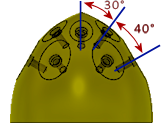

Minimum 0
Maximum 30
Minimum 35
Maximum 70
Used to set a limiting range for selecting the holes to machine. Angles are set from the vertical spindle axis.
 |
Angles measured from spindle axis |
|
|
Minimum 0 |
Minimum 35 |
Multi-axis selections will create 3+2 position for 4th axis rotary or full 5 axis machines. Use the Limit Angle to restrict tilting motion.